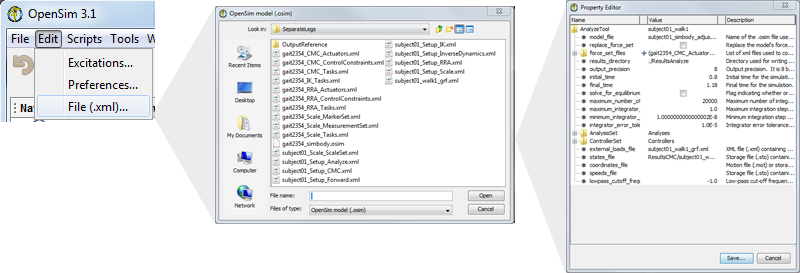
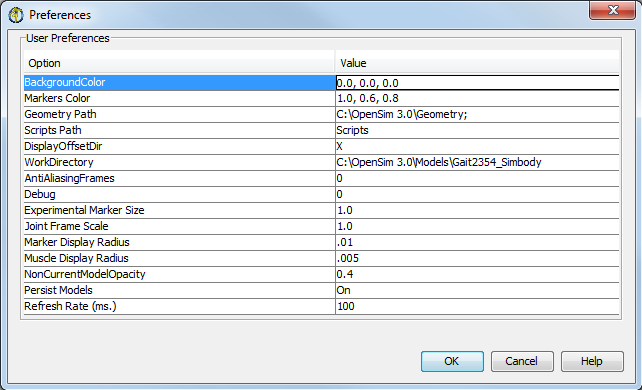
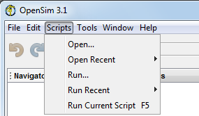
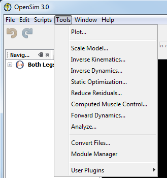

There are five drop-down menus available from the OpenSim main menu bar:
The File drop-down menu includes the following options which allow you to input and output information about models and motions:
The Edit drop-down menu is used to modify the following:
The File Editor allows you to edit the properties of the .xml files used in OpenSim. OpenSim settings (.xml) files contain, for example, settings for tools or additional data for models including marker sets, actuator sets, or control values.
To open the file editor:
|  |
|---|
Click Edit → File (.osim, .xml)... In the window that appears, locate and select the file you wish to edit. A File Property Editor window will open, listing all of the editable parameters, along with any corresponding descriptions, for that file. To change the value of a property, double click on the value, enter a new value, and press the Enter key. To save the edited file when you are finished, click the Save button in the Property Editor window.
|
The Preferences Editor allows you to change user preferences for the 3D View window and other parameters in the OpenSim GUI. To read about these properties described in detail visit the next section, User Preferences page.

The scripts menu gives you acces to a set of GUI scripts for model editing, batch processing and more. See the section on Scripting in the GUI for more details. A set of example scripts are included in OpenSim in the default Scripts directory.
|  | - Use Open -> to open a script in the GUI. The set of scripts displayed is populated from your Scripts directory, which is <OpenSim Install Directory>/Scripts by default. You can change this by modifying your User Preferences. You can also choose Browse.. to open a script that isn't in your Scripts directory.
- Use Run -> to run a script in the GUI. Again, the set of scripts displayed is populated from your Scripts directory, which is <OpenSim Install Directory>/Scripts by default. You can change this by modifying your User Preferences. You can also choose Browse.. to open a script that isn't in your Scripts directory.
|
|---|
The Tools menu enables you to easily perform the tasks needed to generate and analyze musculoskeletal simulations. The following tools are available in OpenSim:
|  | - For more information on the plot tool visit Plotting
- For more information on scaling your model visit Scaling
- For more information on the inverse kinematics tool visit Inverse Kinematics
- For more information on the inverse dynamics tool visit Inverse Dynamics
- For more information on the static optimization tool visit Static Optimization
- For more information on residual reduction tool visit Residual Reduction
- For more information on computing muscle control visit Computed Muscle Control
- For more information on the forward dynamics tool visit Forward Dynamics
- For more information on the analyze tool visit Analyses
- The Convert Files option converts any model (.osim), storage (.sto) or setup files (.xml) to the latest versions supported by OpenSim.
- The Module Manager allows you to enable/install/update individual GUI plugins/modules used by the application.
- For more information on plugins see Using Plugins
|
|---|
The Window menu controls what windows are displayed:
The Help menu includes the following options:
As of OpenSim 3.2, we've added several shortcuts to menu items:
| Command | Action |
|---|
| Ctrl+O | Open Model... |
| Ctrl+L | Load Motion... |
| Ctrl+F4 | Close Model... |
| Ctrl+S | Save Model... |
| Ctrl+T | Plot... |
| F1 | Help |
{kind=link}
{kind=link}
{kind=link}
{kind=link}
{kind=link}
{kind=link}
{kind=link}
{kind=link}
{kind=link}